Exploration
Parcours des paysages variés, découvre des zones cachées et progresse dans un univers pensé pour la curiosité et l’aventure.
Welcome to
L’Overworld n’est que la surface des choses. Entre forêts crépusculaires, ruines oubliées et passages vers l’inconnu, Helf Art Online t’invite à vivre une aventure immersive, fluide et profondément mystérieuse.
Découvrir
Les premiers voyageurs parlent d’une dimension dissimulée, de biomes inédits, de structures sans origine et de créatures qui n’apparaissent dans aucun bestiaire connu. Plus tu t’éloignes, plus le monde révèle ses failles, ses secrets et ses reliques. Helf Art n’a pas encore livré tous ses mystères.
Parcours des paysages variés, découvre des zones cachées et progresse dans un univers pensé pour la curiosité et l’aventure.
Nouvelle interface unique, ambiance visuelle et sonore soignée pour une sensation de monde nouveau, regorgeant de mystères.
Rejoins une communauté active sur Discord, partage tes découvertes et vis l’aventure avec les autres joueurs.
Launcher
Le launcher Helf Art Online installe et configure automatiquement tous les mods requis. Pas de manipulation technique — branchez-vous et jouez.
Requiert macOS 12+ / Windows 10+
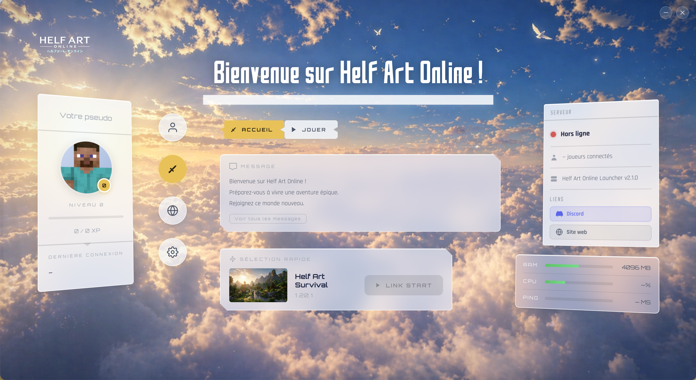
Fonctionnalités
Un monde enrichi, cohérent et vivant — chaque détail a été pensé pour renforcer l’immersion.
Attelez un cheval à un chariot pour transporter des ressources, des animaux ou labourer vos champs sans effort. Craftez d’abord une roue (8 bâtons autour d’une planche), puis assemblez votre chariot. Trois types sont disponibles : le chariot de transport (coffre intégré, 27 slots), le chariot-charrue (laboure automatiquement la terre en avançant), et le chariot de transport simple (sans coffre, plus léger). Pour attacher ou détacher le chariot, montez sur votre cheval et appuyez sur R.
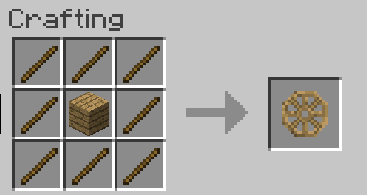
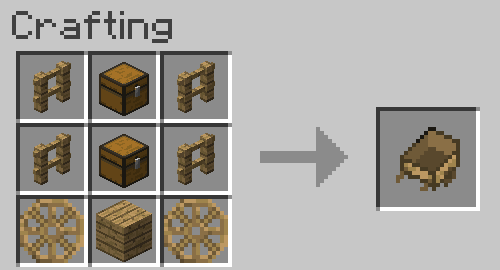
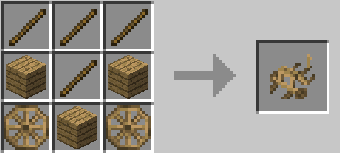
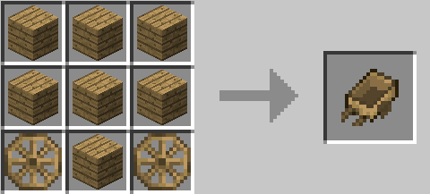
Le sac de couchage est un lit portable que vous posez n’importe où pour passer la nuit — sans changer votre point de réapparition. Idéal pour les longues expéditions. Craftez-le avec 3 laines de la même couleur alignées — vous pouvez aussi teindre un sac blanc existant.
Le hamac fonctionne à l’inverse : il permet de dormir en plein jour pour passer directement à la nuit. Pour l’installer, posez deux crochets (Rope & Nail) sur des blocs espacés de 4 cases et faites un clic droit sur le tissu de hamac.
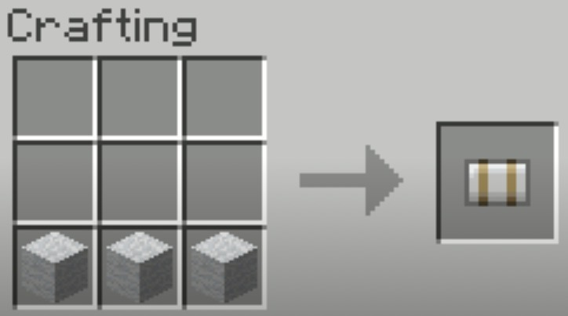
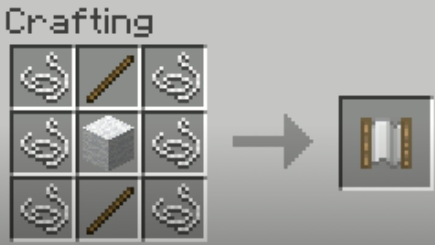
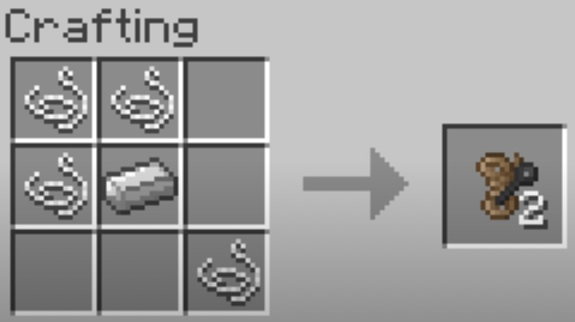
Six navires distincts sillonnent les mers de Helf Art, chacun avec ses propres stats de vitesse, capacité et inventaire. Tous les voiliers nécessitent une voile craftée au préalable. Contrôles : W/S pour avancer/reculer, R pour ouvrir/fermer la voile, I pour l'inventaire.
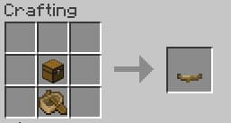
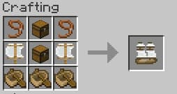
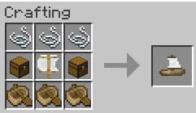
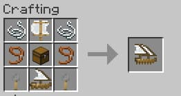
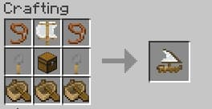
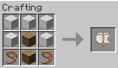
Parlez directement à vos alliés en jeu via votre microphone — sans quitter Minecraft, sans Discord obligatoire. Le son est spatial : plus un joueur est loin, moins sa voix est audible. La portée par défaut est d’environ 32 blocs. Des groupes vocaux privés permettent de communiquer à distance. Activez le micro avec V, affichez la liste des joueurs en vocal avec G.
Des obélisques générés naturellement dans les villages ou craftés par vos soins. Approchez-en un pour l’activer, donnez-lui un nom, puis téléportez-vous instantanément vers n’importe quelle stèle activée — depuis votre inventaire, sans manipulation supplémentaire. Pour voyager sans être près d’une stèle, craftez une Pierre de voyage (portable) ou un Parchemin de voyage (à usage unique).
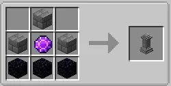
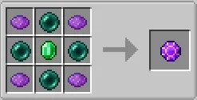
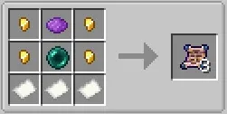
Une mini-carte s’affiche dans le coin de votre écran et révèle le terrain au fur et à mesure de votre exploration. Posez des marqueurs personnalisés, suivez la position des autres joueurs, et consultez votre carte complète en plein écran. Tout ce que vous avez exploré est mémorisé — même après déconnexion.
Marécages mystiques, grottes de cristal, îles tropicales, terres volcaniques… Chaque biome possède ses propres plantes, arbres, blocs et ambiance. Les forêts poussent naturellement et de façon organique — les troncs s’élancent vers la lumière, les branches se courbent, les feuilles meurent seules si coupées du tronc.
Plus de 50 nouvelles créatures peuplent le monde : ours, requins, dauphins, insectes, wyvernes… Certaines peuvent être apprivoisées, équipées d’une armure ou d’un coffre, et même chevauchées. Les espèces rares apparaissent dans des biomes spécifiques — gardez l’œil ouvert.
Plus de 190 variantes de ruines sont générées dans le monde : tours effondrées, temples enfouis, sanctuaires perdus. Chacune contient son propre trésor, ses pièges et parfois des gardiens endormis qui se réveillent à votre approche. Certaines structures n’apparaissent que dans des biomes précis.
Chaque biome possède son propre univers sonore : chants d’oiseaux en forêt, grondements souterrains dans les grottes, vagues sur les plages, vent dans les plaines. Les sons se superposent et évoluent en continu — pas de boucle répétitive, chaque minute dans Helf Art sonne différemment. L’expérience est conçue pour être jouée avec le son.
Rejoindre
FAQ
Oui, il garantit la bonne version, les bons mods et la meilleure stabilité en jeu.
Par défaut : Minecraft Java 1.20.1 Forge.
Oui, le launcher gère l’installation et les mises à jour pour simplifier l’accès au serveur.
Oui, tant que les règles communautaires sont respectées.
Contacte l’équipe via Discord pour une aide rapide.
Tu peux rejoindre le Discord en cliquant ici.